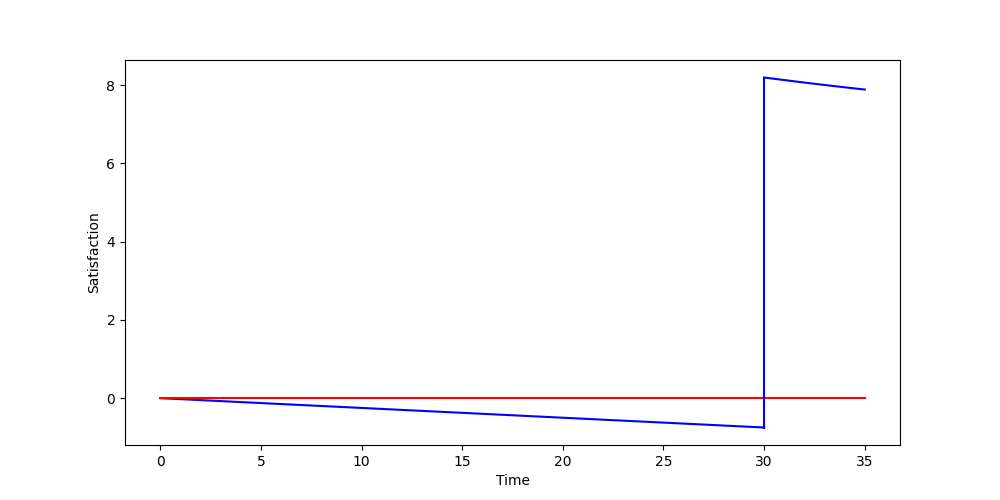

The old saying goes:
You don't know what you got till it's gone.
I propose the following variant:
You don't know what you don't got till you really, really, really want it.
In plain English, objects and actions we a) want and/or need, and b) take for granted, are not fully appreciated. We can drink clean, cold water at any moment we please; we have food available at our fingertips via delivery services; we can sleep when we want; most of us have weekends off from work and enjoy that time pursuing personal hobbies. But when was the last time you really wanted one of these, yet couldn't have it? My hypothesis is simple: the longer we wait for things we want/need, the more satisfaction they bring us. I expect a logarithmic return, i.e., satisfaction does not continue to increase after a certain amount of time waiting.
My life doesn't have too many satisfying moments to it. I get excited at having a solid exercise session or reading a good book or spending time with friends. I take what I can get with minimal additional effort, which is exactly what this post discusses: increasing both the quantity and intensity of satisfying moments without too much additional effort. (The effort comes from abstaining, not performing.)
The model I visualize this with is simple:
Note the area under both curves. The negative one (curve from 0 to 30) is approximately -15, while the positive one (curve from 30 to 35) is approximately 40, giving a net positive satisfaction of +35. In plain English, the satisfaction I get from indulging in something after abstaining from it is much greater than the dissatisfaction I get from solely abstaining from it.
Here I run X [FINISH] different types of experiments. The procedures are not rigorous nor do I care that they aren't. Hypothesis quantification values range from the following: "(slightly, moderately, extremely) more satisfying".
I will establish the baseline satisfaction I get from food on an average day. Once this is determined, I will fast for 24 hours, then prepare and eat an identical meal and compare the satisfaction I experience. This will be done on three separate, spread-out occasions. I expect the food to be significantly more satisfying.
My body tends to become sleepy when either a) I lie down (especially while reading), or b) it gets around my bedtime (9:00pm) and I woke up that morning around 4:00am. It's a double-whammy when I lie down in my bed to read before sleeping. When I begin to doze off while reading is when I put the book down and go to sleep. Funnily enough, as soon as I yawn while reading is when this normally happens—sleepiness jumps from a small intensity to a moderate intensity almost immediately. Sleepiness intensity increases rapidly after this point. I fall asleep in 5-15 minutes.
For one week, I will go to bed at my normal bedtime and note down the following: what time I woke up, what I did for exercise that day (type and intensity), how stressful and exhausting the day was, how tired I feel at bedtime, and how satisfying it was to go to bed on a scale of 1-10.
For the following week, I will go to bed at my normal bedtime of 9:00pm, but will continue reading 0:15 hr past when "I begin to doze off". The purpose here is to become very sleepy, which is accomplished just as well if I stayed up many hours past my normal bedtime. I also don't want to sacrifice the amount of sleep I get, which is already less than desired.
I expect the ability to finally go to sleep will be moderately more satisfying.
Week 1 (baseline, beginning 09 January 2021):
Week 2 (15 min past sleepy):
My average weekday (M-F) goes something like:
I consider prep/commute, exercise, daily tasks, and chores necessary items, thus not free time. This gives a maximum of 4:00 hr of free time per day, split between after-work and bedtime reading.
For one week, I will change my weekday working time to 7:00am-7:00pm with proportional breaks (1:00 hr break per 9:00 hr work = 1:20 hr break per 12:00 hr work). I hope the effect will be two-fold: I will more greatly appreciate only working 8:00 hr/day and I will more greatly appreciate having 4:00 hr free time. These are almost identical (working less = being at home more), but I separate the two in my mind.